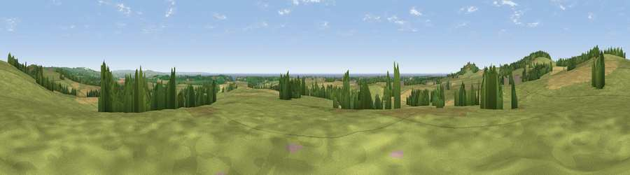

Viewpoint near Sancreed
#11292 in England · top 44% of its area beats it · near SancreedWhere it is
The exact computed spot (SW 40975 28125). Click the marker for map links.
The view, rendered

A 360° render of this exact spot computed from the terrain model, tree cover and land cover — summer colours, afternoon light, calibrated against photographs of famous viewpoints. Real trees, hedges and buildings will differ in detail.
The panorama
Grey silhouette: terrain skyline in each direction (720 bearings, Earth curvature and refraction included). Dashed green: skyline with trees (+15 m) and buildings (+8 m) as obstacles. Blue strip: how far the ground is visible on each bearing.
Where the view opens
Wedge length = distance to the farthest visible ground on that bearing (vegetation-aware). Rings at 10, 25 and 50 km.
What fills the view
62% grassland · 24% cropland · 7% woodland · 6% water ·
Angular shares of the visible panorama (visual magnitude), not map area. Landscape diversity 0.44 (0–1 Shannon).
Key numbers
More beautiful places nearby
The staircase of upgrades: each row has a higher view potential than everything closer. Driving times are estimates from straight-line distance, calibrated against real road routing — check an actual route before setting out.
| Place | Direction | Drive | Score |
|---|---|---|---|
| Viewpoint near Sancreed | NNW · 1 km | ~3 min | 73.4 |
| Viewpoint near Bosavern | W · 2 km | ~6 min | 82.4 |
| Viewpoint near Morvah | N · 8 km | ~16 min | 83.2 |
| Viewpoint near Porthmeor | N · 8 km | ~16 min | 84.8 |
| Rosewall Hill | NNE · 13 km | ~25 min | 88.0 |
| Viewpoint near Combe Martin | NE · 168 km | ~190 min | 88.9 |
| Holdstone Hill | NE · 170 km | ~191 min | 90.2 |
| The Knoll | ENE · 220 km | ~236 min | 91.0 |
50.09662, -5.62321 · source: screening · position refined by local search. Computed location — check access rights before visiting.